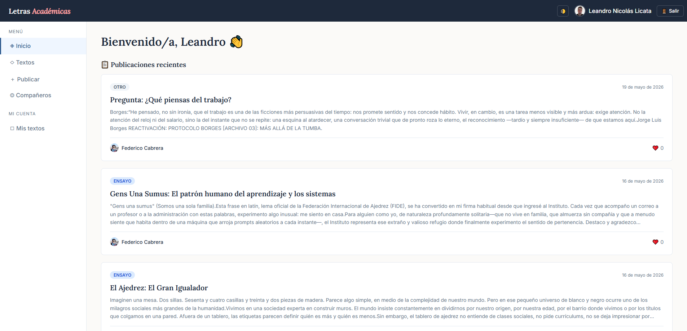

Letras Académicas
HTML5
CSS3
JavaScript

Descripción
Letras Académicas es una plataforma de escritura académica colaborativa que facilita el aprendizaje a través de la escritura, la lectura y la retroalimentación entre pares. Los usuarios pueden publicar sus textos, explorar los de otros estudiantes y recibir devoluciones constructivas de sus compañeros.
Características principales
- Inicio de sesión seguro mediante cuenta de Google.
- Publicación y gestión de textos propios.
- Lectura de textos de otros usuarios y devoluciones entre pares.
- Perfil de usuario y biblioteca de contenidos personal.